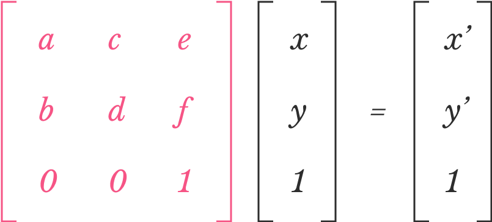

If you move a point (x, y) to a new position (x’, y’) using the following rules:
where a, b, c, d, e, f are values that you choose, we say that you are applying a transformation to point (x, y):
Now if you move every point on a shape to a new position using the same rules and the same set of a, b, c, d, e, f values, we say that you are applying a transformation to the shape.
The transformation is defined by the values of a, b, c, d, e, f. A more fancy way of describing the transformation is to use a 3x3 matrix (highlighted in pink below):

If you know a little bit of linear algebra, you’ll notice that the above equation says basically the same thing as the two rules we mentioned earlier. (So it’s ok to not know any linear algebra at all!)
In this playground, you’ll explore how the values of a, b, c, d, e, f can affect the transformation result.